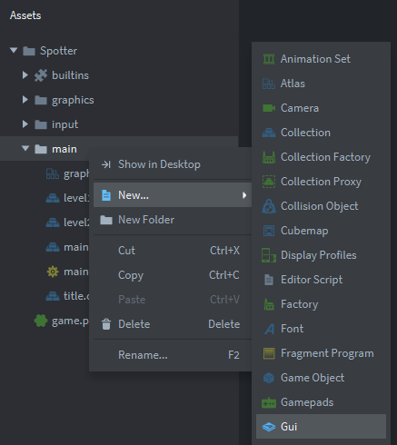
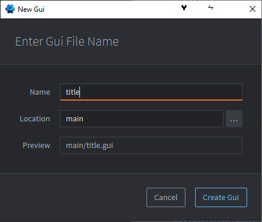
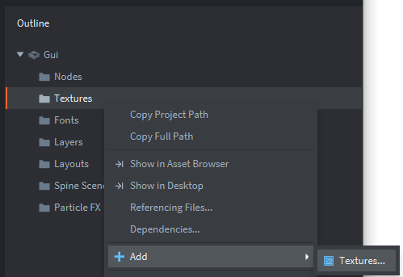
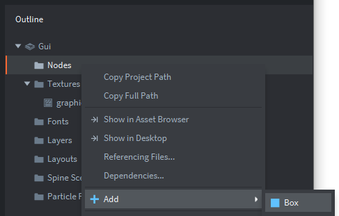
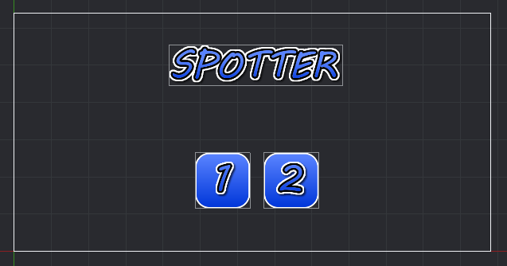
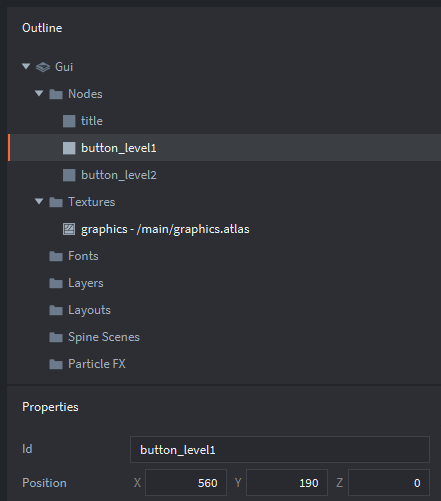

Tutorials for 2D games projects
Spotter | Building the interface with graphics and buttons.
In addition to the main canvas we see in the editor panel when creating game objects, a collection can also have a number of graphical user interfaces that render on top. These interfaces typically contain buttons allowing the player to select options, move to the next screen etc.
In Defold, these interfaces are built using Gui objects and Gui scripts.
- In the assets panel, right click the 'main' folder and select, 'New...', 'Gui'.

- Name the Gui, 'title' to match the collection it will belong to and click, 'Create Gui'.

You will notice a white box in the editor representing the size of the display. In the outline panel a number of boilerplate folders have been created for all the different components a Gui can have.
- In the outline panel, right click, 'Textures' and select, 'Add', 'Textures...'.

A texture is a graphic that is applied to a node. Put simply it is the picture that will be shown on a button.
- Select, '/main/graphics.atlas' and click, 'OK'.
As with all graphics, textures are also stored in an atlas.
- In the outline panel, right click 'Nodes' and select, 'Add', 'Box'.

A node is an object on the Gui. A box is usually a button, but we can also use it for graphics such as titles.
- Change the Id of the box to be, 'title'.
- Change the 'Position' properties to be X: 650 and Y: 500.
- Change the 'Texture' property to be, 'graphics/title'.
Note you can only do this step if you created a texture from an atlas first in steps 3 and 4. - Repeat steps 5 to 8 to create two buttons as shown below. Move the buttons underneath the title using the editor tools and make sure the buttons have their 'Id' property set to:
- button_level1
- button_level2


- Attach the title.gui file to the title.collection file by creating a game object in that collection called, 'gui. Add the component file, 'title.gui'.
Step-by-step guide
- In the assets panel, in the 'main' folder, double click, 'title.collection'.
- In the outline panel, right click, 'Collection' and select, 'Add Game Object'.
- In the properties panel, change the 'Id' property to, 'gui'.
- In the outline panel, right click, 'gui' and select, 'Add Component File'.
- Select, '/main/title.gui' and click, 'OK'.
- Save the changes by pressing CTRL-S or 'File', 'Save All'.
- Run the program by pressing F5 or choosing, 'Debug', 'Start / Attach' from the menu bar. You should see the interface you have just created.

The buttons don't do anything yet because we haven't scripted them. That's the next stage. Stage 2c >
 Craig'n'Dave | Version 1.3
Craig'n'Dave | Version 1.3